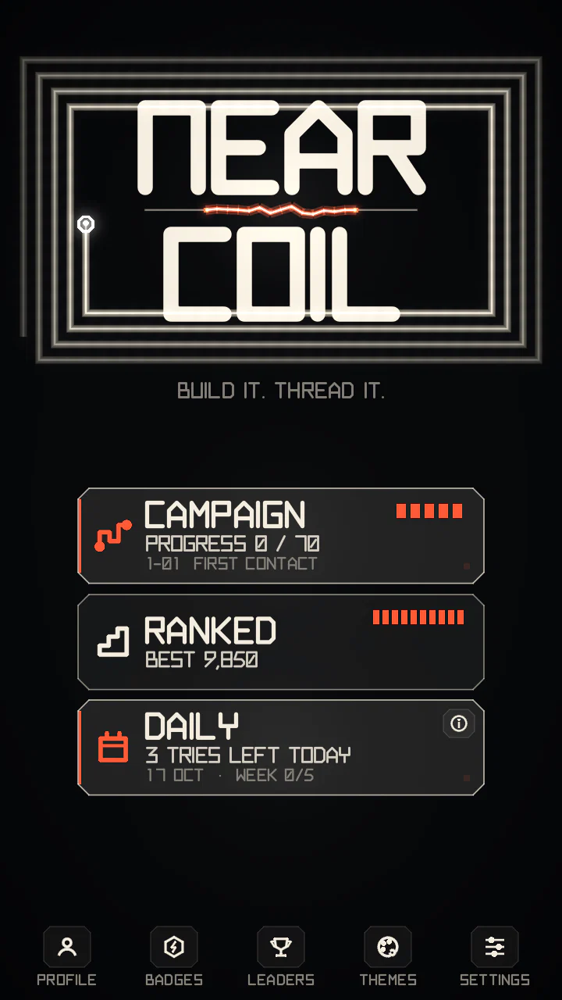
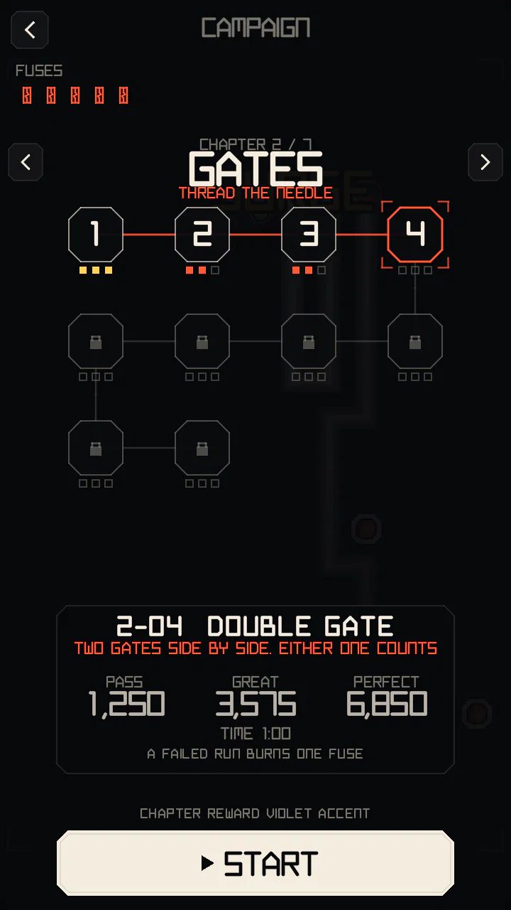
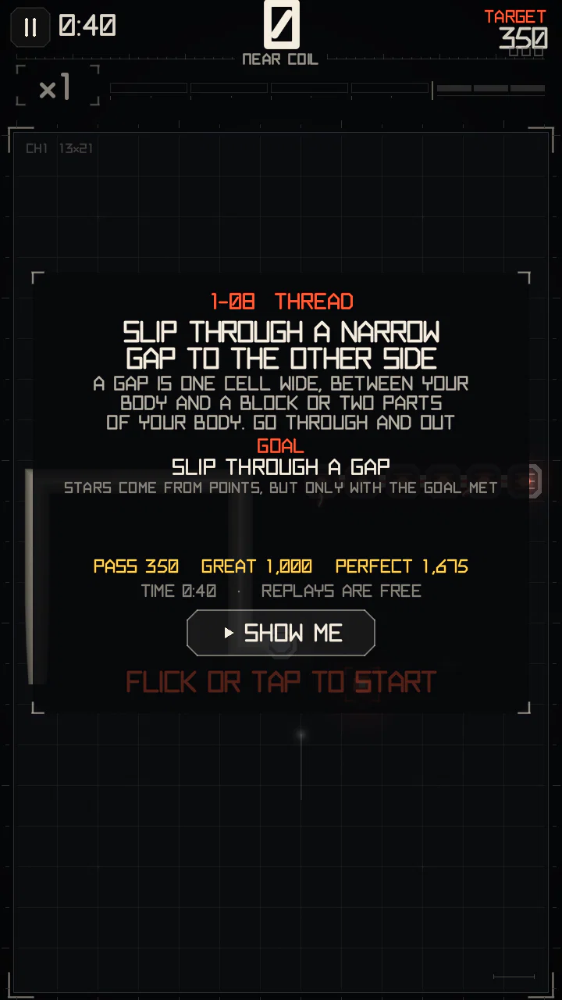
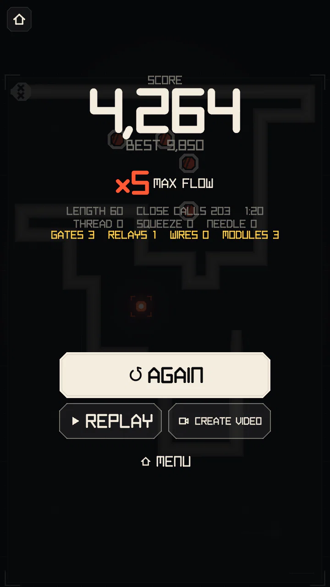

Game modes
Three ways to play the same rules: RANKED for the high score, the DAILY for one shared board a day, and the CAMPAIGN of 70 hand-made levels.


RANKED
The endless mode. One canonical ruleset for everyone: the standard board and speed, all four Circuit Events and all three modules. The run lasts until you crash.
- Your best score goes on the online leaderboard: the world, your country (set in Settings, can be changed once in 30 days) or your platform, for all time or this week.
- Tap a name on a board for PROFILE (their profile) or WATCH: every run on a board comes with its replay. The server re-plays submitted runs to check them.
- Without a connection the run still counts locally and is sent later.
Weekly leagues
Once enough people play (300 a week), the weekly board splits into leagues, Duolingo-style:
- Your first Ranked run of the week puts you in a group of about 30 players of your tier. Your league score is your best run of the week.
- The week ends on Monday 00:00 UTC: the top 5 of each group move up a tier, the bottom 5 move down.
- 6 tiers, from the lowest: COPPER, SILVER, GOLD, PLASMA, ARC, CORE. Rewards are cosmetic.
Until then the plain weekly board is shown instead.
DAILY
- One board a day, the same for everyone: the same nodes for the same moves and the same event draws. A new one starts every day at 00:00 UTC.
- 3 counted tries a day. A try is spent when it starts, so quitting a bad start still uses it. After that you can practise on the day's board until tomorrow.
- Your best counted try goes on the day's leaderboard.
- The first try of the day refills one Campaign fuse.
- Weekly goal: finish a Daily Challenge on 5 different days of one week (Monday to Sunday, UTC) and you get +1 fuse, once a week. It is paid even with a full bank (up to 6/5). A second try on the same day or a practice run does not count. This month's Daily history is on the DAILY tab of ACHIEVEMENTS.
- Counted tries need a connection (the server hands them out); offline you can only practise.
- The Daily uses exactly the Ranked rules.
CAMPAIGN


70 levels in 7 chapters. Each chapter teaches one idea and ends with a test; every level changes a few rules (board, speed, events, modules, start). The full list with every target is on All Campaign levels.
Targets and medals
- Each level has three score targets: PASS, GREAT and PERFECT, and a time limit.
- Many levels also set a goal, shown under GOAL on the level card and kept on screen during the run: do something a number of times (drive through 3 gates, take SURGE from a port), never do something (take a short gate, let a zone burn your points), or reach or hold a multiplier («reach ×2 within 20 s, then don't drop below it»). Breaking a goal ends the run at once, and a goal still open when the time is up fails too: either way the level is failed whatever the score. Stars still come from the score, once the goal is met.
- The level ends when the time is up, when you crash or when its goal fails; reaching PERFECT does not end it, so you can keep scoring for a better best. The results lead with the medal you won (a crash after it is only a footnote). Your medal is the best target your score reached; points are never lost on a crash, so a medal reached stays even if you crash later (unless the goal is still open).
- After reaching a medal you can finish the level from the pause menu.
- PASS opens the next level. Levels you have cleared can be replayed any time for a better medal.
- Many lessons have a SHOW ME button on the briefing card: a short demonstration of the move.


FUSES
- You have up to 5 fuses. One comes back every 20 minutes (a full bank in 100 minutes).
- A fuse burns when you fail a level that has no PERFECT yet (first try or replay), including quitting it mid-run. Leaving from the briefing card costs nothing.
- Once a level has PERFECT its replays are free. Chapter 1 never costs fuses. The RETRY button says it: a fuse icon and «FAIL: -1», or «FREE».
- Ranked, the Daily and practice never cost anything.
- FULL RECHARGE (an in-app purchase) refills the bank; the first Daily try of the day gives one fuse.
Chapter rewards
Finishing a chapter unlocks a colour accent for the free SIGNATURE theme (COBALT, VIOLET, ACID, ROSE, ICE, GOLD, WHITE). It is switched on at once; pick another or the original in Themes.
CAMPAIGN OVERVIEW
The first page of the map shows all chapters at once: each level's medal contacts, the medals of each chapter (out of 30) and its PERFECTs. Tap a chapter to open it on its first level without PERFECT; the button below offers the medal you are closest to. Once every level is cleared the map opens here, and the main menu counts your medals out of 210.
The end of the Campaign
Clearing the last level powers up the whole schematic on the results: SCHEMATIC COMPLETE, your levels and medals, the FULL SCHEMATIC achievement and the last accent. PERFECT on every level (all 210 medals) earns SUPERCONDUCTOR: the body no longer cools toward the tail, in every theme. It is on at once; switch it off in Themes. Both moments play once.
After a run


- The results show the score, your best and the highest multiplier, plus the run's numbers: length, close calls, threads, squeezes, needles, gates, relays, wires and modules.
- REPLAY plays the run back at 1×, 2× or 4× and can jump to the best moment.
- New achievements appear as cards over the results, followed by the next ones you are close to.
- CREATE VIDEO makes a vertical 60 fps clip: FULL RUN or BEST MOMENTS, at 1×, 2×, 4× or 8×. Every clip names you, the mode and the date. The language button (VIDEO: ENGLISH) picks the clip's language, so you can play in one language and share in another. Clips at the speed and language of your recording are ready instantly; the rest are rendered on the phone, which takes a few seconds. SHARE sends a result card instead.
Fair by design
Nothing you can buy changes the score. Themes are cosmetic only (they never change hitboxes, timing or scoring), modules and attempts are never sold, and Ranked and the Daily are always free.